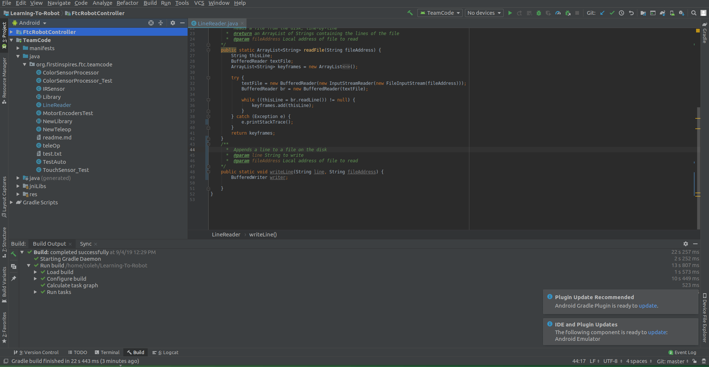

FTC Software 0.3: Open Android Studio
In order to use Android Studio, you'll need to open it.
-
Open the Studio
On Windows, the installer should have added Android Studio to your Start Menu. Click on the box labelled "Type here to search", and enter "Android Studio". Click on the first result to open it.
On Linux, you should have pinned Android Studio to your taskbar. Click on the Android Studio icon to launch it.
-
Open the Project
As soon as Android Studio loads, click the
Import Project (Gradle, Eclipse, ADT, etc)button. This will open a file picker; choose the folder where you cloned the repository. After you click "Okay", it will open the main window of Android Studio. It will look similar to the screenshot below. -
The Things in Android Studio
Android studio has 3 main sections, or panels. On the bottom is your Build panel, which shows the progress of any code-builds you might have running. When you first open a project in Android Studio, it will start building automatically in order to test; you'll likely see a loading icon instead of the "Build: Completed Successfully" in the screenshot. Build logs can also help you find errors in the code. If you don't see this panel, you can open it by clicking on
View > Tool Windows > Buildin the top bar.Second, on the left, you can see your files. This is like a built-in file browser for Android Studio. If you see something other than "Android" in the drop-down at the top, you should set it to "Android". Below, the Files panel has a list of all Android code. Your code will be in
TeamCode > java > org.firstinspires.ftc.teamcode, which will probably be empty when you open it. You can create a file by right-clicking and selectingNew > Java Class.After you've created a Java file, you can double-click the file to open it in Android Studio's third main panel: the editor, which takes up the top-right corner. You'll use the editor to actually type your code. If you see code underlined with red, it means that it has an error. Green underlines mean that optimizations can be applied to your code. Green text indicates a comment-- comments will be ignored when the program is being built, so they can be used to explain code.